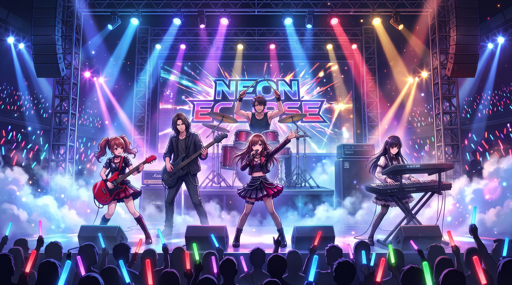

01◉
RYO
DRUMS / 鼓手
把心跳變成節拍的人。

LIVE FROM TAIPEI ／ EST. 2021
把夜晚唱成我們的形狀
Neon Eclipse 成團於台北。五個原本走在不同節拍上的人，在一場深夜 jam session 裡，找到共同的光。
把合成器的冷冽、吉他的失真，和那些說不出口的心事，揉成一首首屬於深夜的歌。天亮以前，讓我們陪你走一段。
五個人，一個共同頻率。
每一道光，都有自己的聲音。
DRUMS / 鼓手
把心跳變成節拍的人。
BASS / 貝斯手
低音裡，藏著整座城市。
VOCALS / 主唱
替沒說出口的情緒找到旋律。
GUITAR / 吉他手
用失真，寫下清醒的夢。
KEYS / 鍵盤手
在每段沉默裡點亮星星。
新曲試聽・瀏覽器合成版本
把最後一班車窗外的光，留在一首歌裡。現在戴上耳機，聽聽這段為夜行者寫下的旋律。
NEON ECLIPSE ・ DEMO 01此為即時合成試聽，專案目前未附原始錄音。